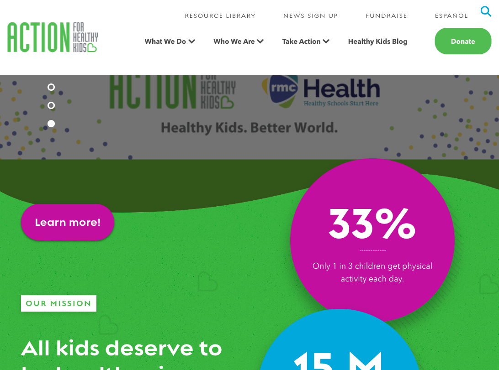
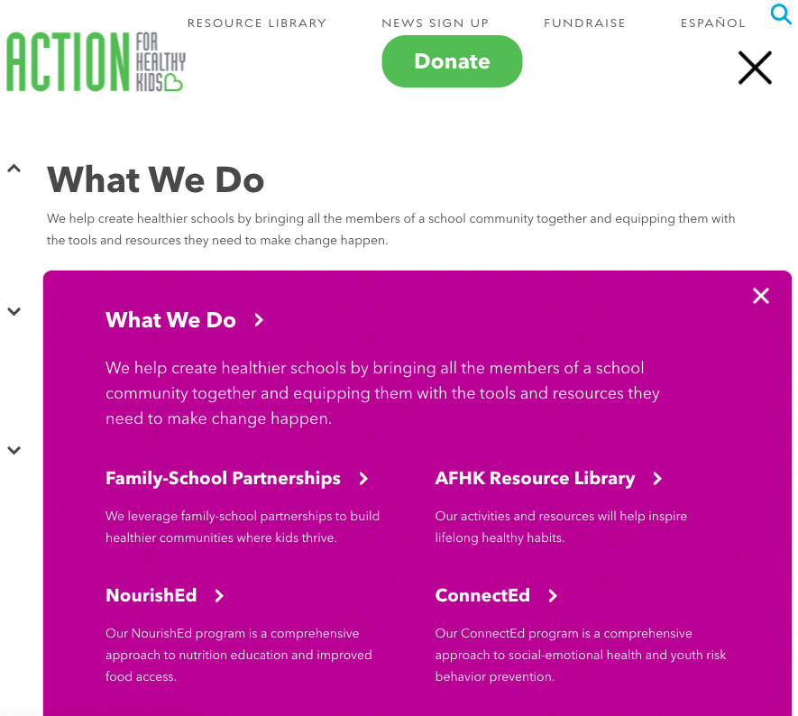
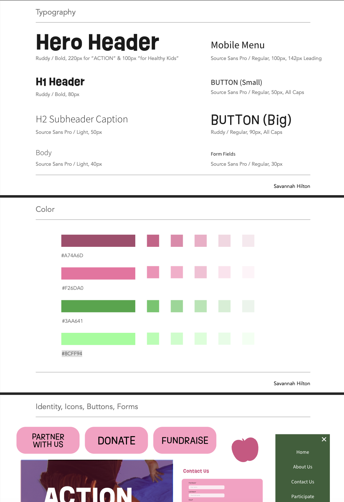
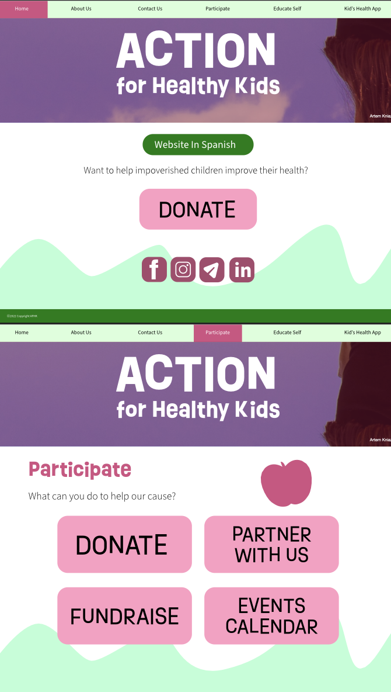

ACTION
for Healthy Kids
Process
For my DGM 1230 class we were instructed to find a non-profit website that needs some work and redesign it. I am personally passionate about the importance of mental and physical health. I know exercise and proper nutrition helps people feel better in life in ever way. Ironically, I am staying up all night to finish this website, but that's besides the point haha.
Because I am passionate about building healthy habits I found a non-profit site that seemed it could do a great deal of good, yet needed a revamp. The site I decided is for an organization called "Action For Healthy Kids", aka AFHK, and here is the link to their site.
Some issues I found were that the site was very overwhelming, many links didn't work, the site wasn't as responsive as I would like, and the navigation was very confusing and problematic.
 Above take a look at the screenshots of the site at first glance, and the site navigation. Pretty confusing and overwhlming right? To organize my understanding of how to best reorganize the AFHK site I created a drawn sitemap of where all the links led to and were organized. See below for visual.
Next, I created wireframe sketches of how I wanted to layout the information for the organization in a simpler, more concise way. I wanted the site to be cute and kid-friendly, yet still engaging for adults. I didn't design for every single route that the AFHK site had, especially considering some of the links led nowhere, but I trired to include the basic beginnings of what would be necessary for the site to be less confusing on first view and click.
After that I created basic digital wireframes to make more clear what I wanted the site to be online, rather than just on paper. To start, I kept the wireframe in black and white to focus on the layout, rather than the color scheme. These wireframes were created for the 3 difference media query sizes: mobile, tablet, and desktop.
Finall, I created a pattern library, a final wireframe, and a prototype that would allow you to simulate if the website were coded using Adobe XD's prototype feature!
 In the end I coded parts of the site, but adjusted to meet the requirements of the final capstone assignment for my DGM 2740 Class.